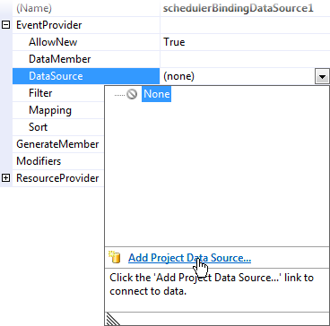
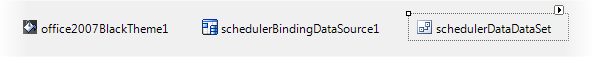
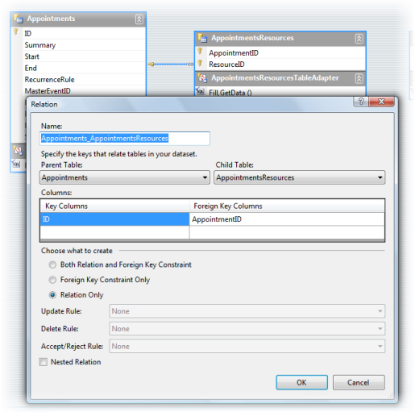
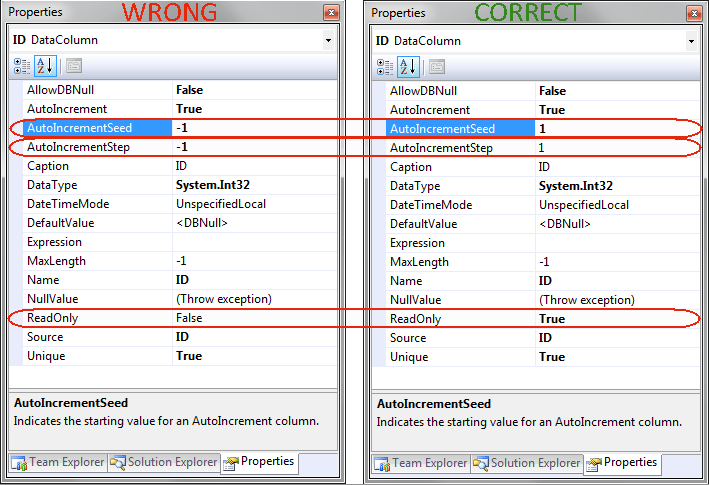
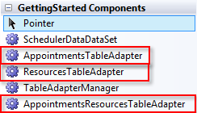
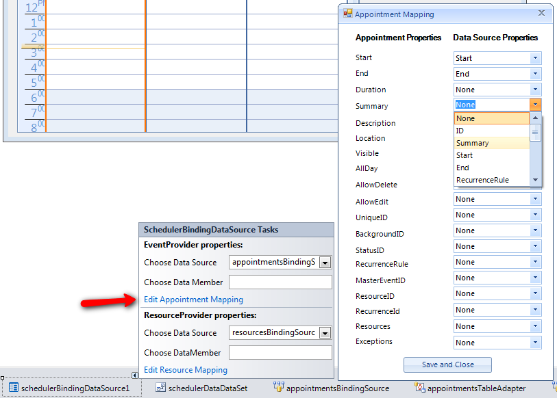
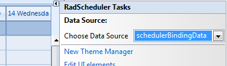
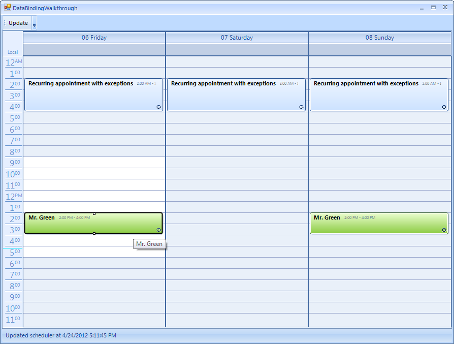

Data Binding Walkthrough
This walkthrough will cover creating and binding RadScheduler to a data source in a step-by-step manner
Another example of binding RadScheduler is available in our
Telerik UI for WinForms Step-by-step Tutorial
The database
RadScheduler has a very flexible binding system which can cover various binding scenarios.
Most of them are covered in the next articles. Here we will cover the scenario with binding
to a database in which appointments and resources are in a many-to-many relation.
A sample database ships with our products and can be found under
[Your installation directory]\Examples\QuickStart\DataSources\SchedulerData.mdb.
By default the installation directory is C:\Program Files\Telerik\UI for WinForms\Version\
The following screen shot demonstrates the schema of the database.
Binding the Scheduler
Let’s assume you have added a RadScheduler to your form and you want to bind it to a data source.
To do so you must first create and set up a SchedulerBindingDataSource instance. SchedulerBindingDataSource
is a component and is available in your toolbox. To setup a SchedulerBindingDataSource, follow these steps:
Add a SchedulerBindingDataSource from the Toolbox to the form.
In the Properties window, open the EventProvider property. Drop down the
DataSource sub-property list and select Add Project DataSource...
This step will display the Data Source Configuration Wizard dialog.
Complete this wizard by choosing Access Database File connection
and selecting the sample database located under the \Examples\DataSources directory. This will
create a DataSet component and add it to the component tray below the form designer.
Click the "SchedulerDataDataSet" Smart Tag and select Edit in Dataset Designer.
Add a relation between the Appointments and AppointmentsResources tables and name it "Appointments_AppointmentsResources".
Make the "Key Columns" entry be "ID" from the Appointments table and set "Foreign Key Columns" from the AppointmentsResources
table to "AppointmentID".
When you create a dataset from the MS Access database, several properties of the auto number fields are wrongly set.
Please, set these as in the right (correct) version below:
Build the project. This step will create several useful adapter components that we will use later to fill the dataset.

Mapping the properties
In order to map the fields of your data source to the correct properties of scheduler’s objects,
you need to setup two mapping info instances: one of type AppointmentMappingInfo and one of type ResourceMappingInfo.
You can do this either through code or in the Visual Studio designer.
To setup appointment mapping at design time, click the Edit Appointment Mapping button in the smart tag menu
of your SchedulerBindingDataSource instance. To edit the resource mapping, click the Edit Resource Mapping button.

When you do so, a dialog will appear letting you choose the field of the data source which should be mapped
to the corresponding appointment/resource property.
The data source fields should be set prior editing the mapping in order to get automatically populated
with data source fields drop downs.The Resources property of the AppointmentMappingInfo should be set with the name of the relation
that connects the Appointments and the AppointmentsResources tables. The ResourceId property should
be set with the name of the column in the AppointmentsResources table that holds the id of the resource.
Programatically mapping
In order to programatically map the fields of your data source to the correct properties of scheduler’s objects,
you need to setup two mapping info instances: one of type AppointmentMappingInfo and one of type ResourceMappingInfo
and assign them to the SchedulerBindingDataSource instance as it is demonstrated below.
[C#]
AppointmentMappingInfo appointmentMappingInfo = new AppointmentMappingInfo();
appointmentMappingInfo.BackgroundId = "BackgroundID";
appointmentMappingInfo.Description = "Description";
appointmentMappingInfo.End = "End";
appointmentMappingInfo.Location = "Location";
appointmentMappingInfo.MasterEventId = "ParentID";
appointmentMappingInfo.RecurrenceRule = "RecurrenceRule";
appointmentMappingInfo.ResourceId = "ResourceID";
appointmentMappingInfo.Resources = "AppointmentsAppointmentsResources";
appointmentMappingInfo.Start = "Start";
appointmentMappingInfo.StatusId = "StatusID";
appointmentMappingInfo.Summary = "Summary";
schedulerBindingDataSource1.EventProvider.Mapping = appointmentMappingInfo;
ResourceMappingInfo resourceMappingInfo = new ResourceMappingInfo();
resourceMappingInfo.Id = "ID";
resourceMappingInfo.Name = "ResourceName";
this.schedulerBindingDataSource1.ResourceProvider.Mapping = resourceMappingInfo;
[VB.NET]
Dim appointmentMappingInfo As New AppointmentMappingInfo()
appointmentMappingInfo.BackgroundId = "BackgroundID"
appointmentMappingInfo.Description = "Description"
appointmentMappingInfo.[End] = "End"
appointmentMappingInfo.Location = "Location"
appointmentMappingInfo.MasterEventId = "ParentID"
appointmentMappingInfo.RecurrenceRule = "RecurrenceRule"
appointmentMappingInfo.ResourceId = "ResourceID"
appointmentMappingInfo.Resources = "AppointmentsAppointmentsResources"
appointmentMappingInfo.Start = "Start"
appointmentMappingInfo.StatusId = "StatusID"
appointmentMappingInfo.Summary = "Summary"
SchedulerBindingDataSource1.EventProvider.Mapping = appointmentMappingInfo
Dim resourceMappingInfo As New ResourceMappingInfo()
resourceMappingInfo.Id = "ID"
resourceMappingInfo.Name = "ResourceName"
Me.SchedulerBindingDataSource1.ResourceProvider.Mapping = resourceMappingInfo
Retrieving the data
To retrieve the data, first we need to fill the data set:
[C#]
this.resourcesTableAdapter.Fill(this.schedulerDataDataSet.Resources);
this.appointmentsResourcesTableAdapter.Fill(this.schedulerDataDataSet.AppointmentsResources);
this.appointmentsTableAdapter.Fill(this.schedulerDataDataSet.Appointments);
[VB.NET]
Me.ResourcesTableAdapter.Fill(Me.SchedulerDataDataSet.Resources)
Me.AppointmentsResourcesTableAdapter.Fill(Me.SchedulerDataDataSet.AppointmentsResources)
Me.AppointmentsTableAdapter.Fill(Me.SchedulerDataDataSet.Appointments)
You should fill the tables in the exact same order if you have already set the DataSource property of RadScheduler.
Alternatively, you can just call the DataBind method of RadScheduler after you fill the tables.
Now we need to assign the Appointments and Resources tables from the data set to our SchedulerBindingDataSource
(the following can also be set at design time through the Smart Tag of your SchedulerBindingDataSource instance
as you can see on the previous image):
[C#]
schedulerBindingDataSource1.ResourceProvider.DataSource = schedulerDataDataSet.Resources;
schedulerBindingDataSource1.EventProvider.DataSource = schedulerDataDataSet.Appointments;
[VB.NET]
SchedulerBindingDataSource1.ResourceProvider.DataSource = SchedulerDataDataSet.Resources
SchedulerBindingDataSource1.EventProvider.DataSource = SchedulerDataDataSet.Appointments
Finally, we assign our SchedulerBindingDataSource instance to RadScheduler as its DataSource.
This can be achieved either through the Smart Tag of RadScheduler or via code:

[C#]
radScheduler1.DataSource = schedulerBindingDataSource1;
[VB.NET]
RadScheduler1.DataSource = SchedulerBindingDataSource1
If the above steps are not performed in the same order, RadScheduler might not display the appointments.
In this case you can try calling the DataBind method of RadScheduler or the Rebind method of SchedulerBindingDataSource.
Updating the database
Add the following code to the Click event handler for an "Update" button, which will update the data source.
(for more information on saving data, see MSDN:
How to: Update Data by Using a TableAdapter
).Note that we need to update the added, modified and deleted records in a certain order because of the relations between our tables.
We also need to use the two dictionaries to keep track of the automatically generated IDs before and after calling Update.
This is due to a synchronization problem between the database and the dataset, where the data adapter could not update correctly
the ID of the added row. This happens because the IDs generated locally might differ from the IDs generated from the database
(for example when multiple users work simultaneously) and we use this IDs to store the relation between appointments and resources.
(Here is an MSDN article which describes this limitation:
Retrieving Identity or Autonumber Values
)
[C#]
private void btnUpdate_Click(object sender, EventArgs e)
{
appointmentsResourcesTableAdapter.Adapter.AcceptChangesDuringUpdate = false;
SchedulerDataDataSet.AppointmentsResourcesDataTable deletedRelationRecords =
this.schedulerDataDataSet.AppointmentsResources.GetChanges(DataRowState.Deleted)
as SchedulerDataDataSet.AppointmentsResourcesDataTable;
SchedulerDataDataSet.AppointmentsResourcesDataTable newRelationRecords =
this.schedulerDataDataSet.AppointmentsResources.GetChanges(DataRowState.Added)
as SchedulerDataDataSet.AppointmentsResourcesDataTable;
SchedulerDataDataSet.AppointmentsResourcesDataTable modifiedRelationRecords =
this.schedulerDataDataSet.AppointmentsResources.GetChanges(DataRowState.Modified)
as SchedulerDataDataSet.AppointmentsResourcesDataTable;
SchedulerDataDataSet.AppointmentsDataTable newAppointmentRecords =
this.schedulerDataDataSet.Appointments.GetChanges(DataRowState.Added) as SchedulerDataDataSet.AppointmentsDataTable;
SchedulerDataDataSet.AppointmentsDataTable deletedAppointmentRecords =
this.schedulerDataDataSet.Appointments.GetChanges(DataRowState.Deleted) as SchedulerDataDataSet.AppointmentsDataTable;
SchedulerDataDataSet.AppointmentsDataTable modifiedAppointmentRecords =
this.schedulerDataDataSet.Appointments.GetChanges(DataRowState.Modified) as SchedulerDataDataSet.AppointmentsDataTable;
try
{
if (newAppointmentRecords != null)
{
Dictionary<int, int> newAppointmentIds = new Dictionary<int, int>();
Dictionary<object, int> oldAppointmentIds = new Dictionary<object, int>();
for (int i = 0; i < newAppointmentRecords.Count; i++)
{
oldAppointmentIds.Add(newAppointmentRecords[i], newAppointmentRecords[i].ID);
}
appointmentsTableAdapter.Update(newAppointmentRecords);
for (int i = 0; i < newAppointmentRecords.Count; i++)
{
newAppointmentIds.Add(oldAppointmentIds[newAppointmentRecords[i]], newAppointmentRecords[i].ID);
}
if (newRelationRecords!=null)
{
for (int i = 0; i < newRelationRecords.Count; i++)
{
newRelationRecords[i].AppointmentID = newAppointmentIds[newRelationRecords[i].AppointmentID];
}
}
}
if (deletedRelationRecords != null)
{
appointmentsResourcesTableAdapter.Update(deletedRelationRecords);
}
if (deletedAppointmentRecords != null)
{
appointmentsTableAdapter.Update(deletedAppointmentRecords);
}
if (modifiedAppointmentRecords != null)
{
appointmentsTableAdapter.Update(modifiedAppointmentRecords);
}
if (newRelationRecords != null)
{
appointmentsResourcesTableAdapter.Update(newRelationRecords);
}
if (modifiedRelationRecords != null)
{
appointmentsResourcesTableAdapter.Update(modifiedRelationRecords);
}
this.schedulerDataDataSet.AcceptChanges();
}
catch (Exception ex)
{
MessageBox.Show(string.Format("An error occurred during the update process:\n{0}", ex.Message));
}
finally
{
if (deletedRelationRecords != null)
{
deletedRelationRecords.Dispose();
}
if (newRelationRecords != null)
{
newRelationRecords.Dispose();
}
if (modifiedRelationRecords != null)
{
modifiedRelationRecords.Dispose();
}
}
lblStatus.Text = "Updated scheduler at " + DateTime.Now.ToString();
}
[VB.NET]
Private Sub btnUpdate_Click(ByVal sender As Object, ByVal e As EventArgs)
AppointmentsResourcesTableAdapter.Adapter.AcceptChangesDuringUpdate = False
Dim deletedRelationRecords As SchedulerDataDataSet.AppointmentsResourcesDataTable = TryCast(Me.SchedulerDataDataSet.AppointmentsResources.GetChanges(DataRowState.Deleted), SchedulerDataDataSet.AppointmentsResourcesDataTable)
Dim newRelationRecords As SchedulerDataDataSet.AppointmentsResourcesDataTable = TryCast(Me.SchedulerDataDataSet.AppointmentsResources.GetChanges(DataRowState.Added), SchedulerDataDataSet.AppointmentsResourcesDataTable)
Dim modifiedRelationRecords As SchedulerDataDataSet.AppointmentsResourcesDataTable = TryCast(Me.SchedulerDataDataSet.AppointmentsResources.GetChanges(DataRowState.Modified), SchedulerDataDataSet.AppointmentsResourcesDataTable)
Dim newAppointmentRecords As SchedulerDataDataSet.AppointmentsDataTable = TryCast(Me.SchedulerDataDataSet.Appointments.GetChanges(DataRowState.Added), SchedulerDataDataSet.AppointmentsDataTable)
Dim deletedAppointmentRecords As SchedulerDataDataSet.AppointmentsDataTable = TryCast(Me.SchedulerDataDataSet.Appointments.GetChanges(DataRowState.Deleted), SchedulerDataDataSet.AppointmentsDataTable)
Dim modifiedAppointmentRecords As SchedulerDataDataSet.AppointmentsDataTable = TryCast(Me.SchedulerDataDataSet.Appointments.GetChanges(DataRowState.Modified), SchedulerDataDataSet.AppointmentsDataTable)
Try
If newAppointmentRecords IsNot Nothing Then
Dim newAppointmentIds As New Dictionary(Of Integer, Integer)()
Dim oldAppointmentIds As New Dictionary(Of Object, Integer)()
For i As Integer = 0 To newAppointmentRecords.Count - 1
oldAppointmentIds.Add(newAppointmentRecords(i), newAppointmentRecords(i).ID)
Next
AppointmentsTableAdapter.Update(newAppointmentRecords)
For i As Integer = 0 To newAppointmentRecords.Count - 1
newAppointmentIds.Add(oldAppointmentIds(newAppointmentRecords(i)), newAppointmentRecords(i).ID)
Next
If newRelationRecords IsNot Nothing Then
For i As Integer = 0 To newRelationRecords.Count - 1
newRelationRecords(i).AppointmentID = newAppointmentIds(newRelationRecords(i).AppointmentID)
Next
End If
End If
If deletedRelationRecords IsNot Nothing Then
AppointmentsResourcesTableAdapter.Update(deletedRelationRecords)
End If
If deletedAppointmentRecords IsNot Nothing Then
AppointmentsTableAdapter.Update(deletedAppointmentRecords)
End If
If modifiedAppointmentRecords IsNot Nothing Then
AppointmentsTableAdapter.Update(modifiedAppointmentRecords)
End If
If newRelationRecords IsNot Nothing Then
AppointmentsResourcesTableAdapter.Update(newRelationRecords)
End If
If modifiedRelationRecords IsNot Nothing Then
AppointmentsResourcesTableAdapter.Update(modifiedRelationRecords)
End If
Me.SchedulerDataDataSet.AcceptChanges()
Catch ex As Exception
MessageBox.Show(String.Format("An error occurred during the update process:" & vbLf & "{0}", ex.Message))
Finally
If deletedRelationRecords IsNot Nothing Then
deletedRelationRecords.Dispose()
End If
If newRelationRecords IsNot Nothing Then
newRelationRecords.Dispose()
End If
If modifiedRelationRecords IsNot Nothing Then
modifiedRelationRecords.Dispose()
End If
End Try
lblStatus.Text = "Updated scheduler at " + DateTime.Now.ToString()
End Sub
